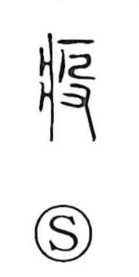

疫

Uncategorized
Kun: eyami | On: eki, yaku
epidemic ・ infectious disease ・ plague
Explanation
A phono-semantic character: the sickness radical 疒 sets the field of meaning as illness, while the phonetic is 殳—the hand-with-stick sign used for striking—here standing as the abbreviated form of 役 (eki). Because 役 carries the sense of going out or ranging far, the graph came to name a disease that spreads widely: an epidemic or prevailing sickness. In earlier times such outbreaks were attributed to the activity of malevolent spirits, and exorcistic rites were performed to drive them away.